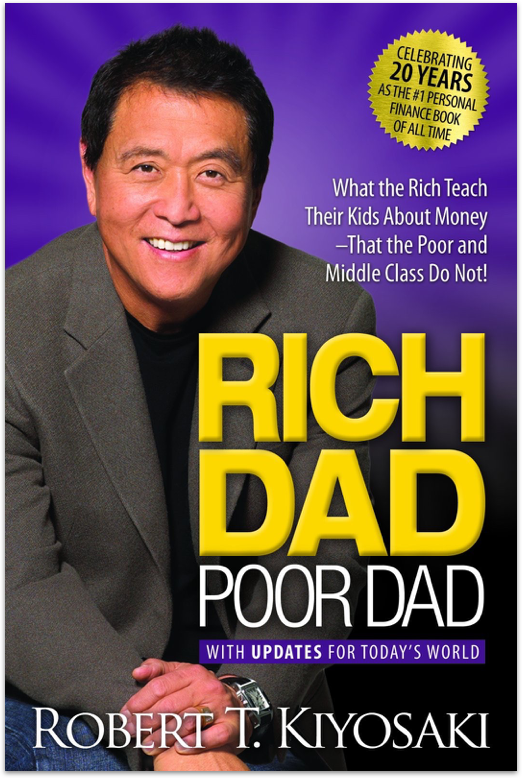
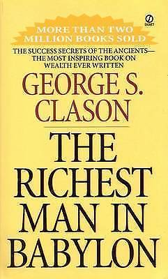

A really nice book from Robert Kiyosaki and his two dads—his real father (poor dad) and the father of his best friend (rich dad)— and the ways in which both men shaped his thoughts about money and investing. The book explodes the myth that you do not need to earn a high income to become rich.
The Richest Man in Babylon is a 1926 book by George S. Clason that dispenses financial advice through a collection of parables set 4,000 years ago in ancient Babylon.
